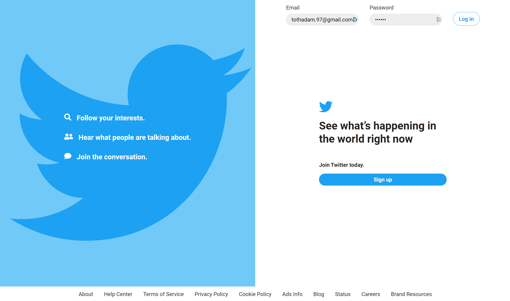
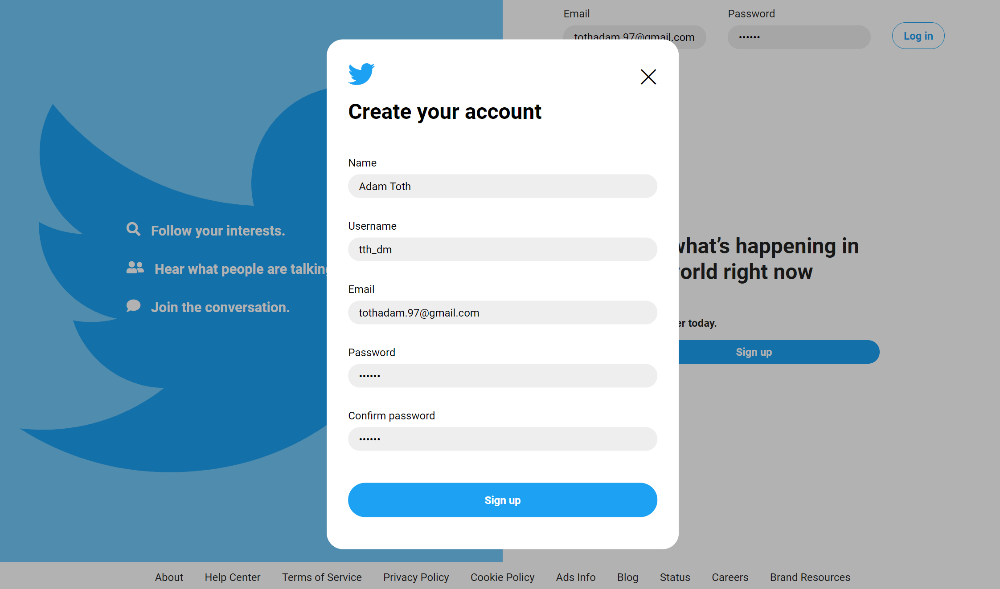
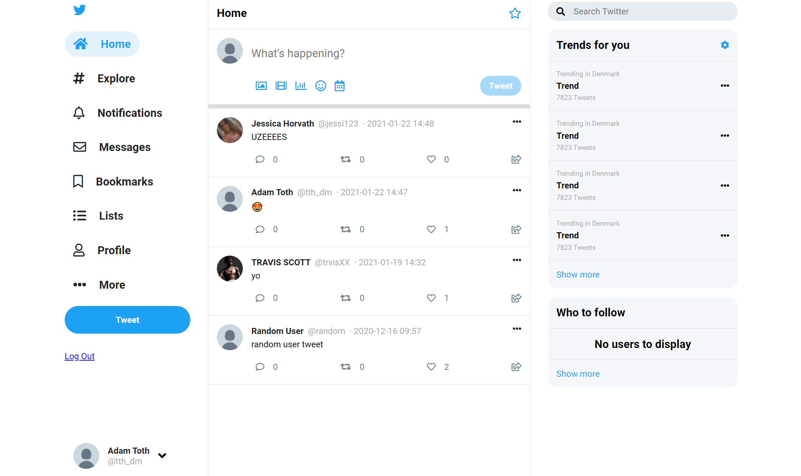
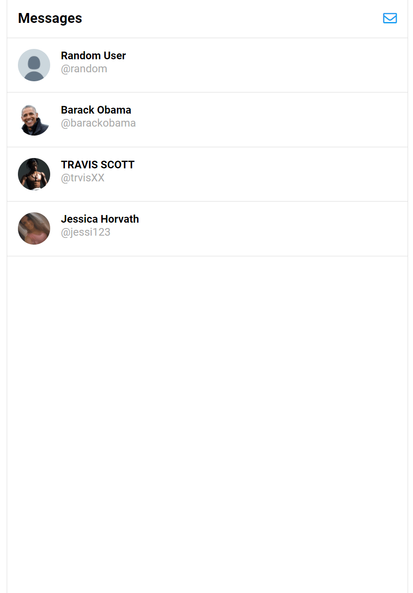
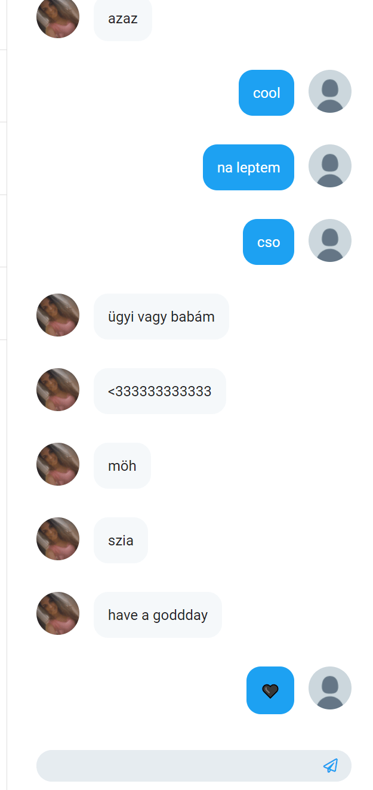
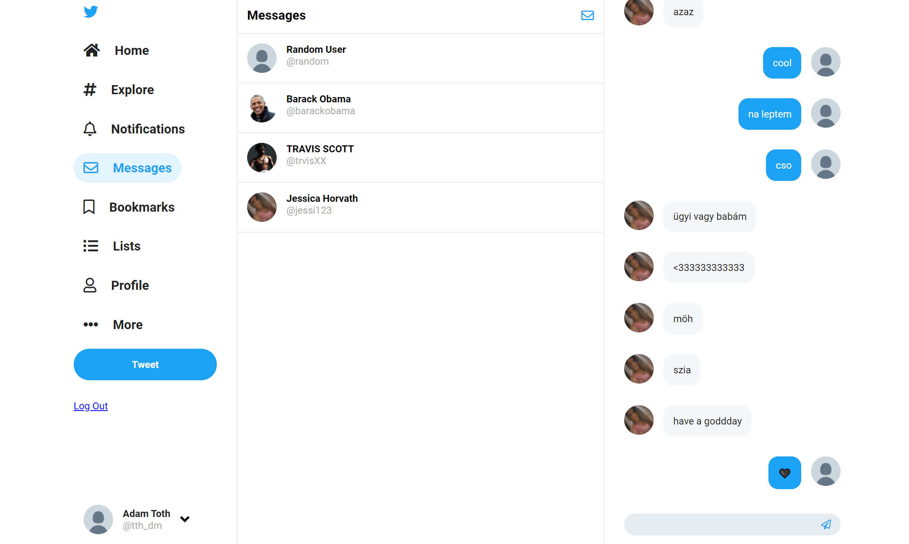
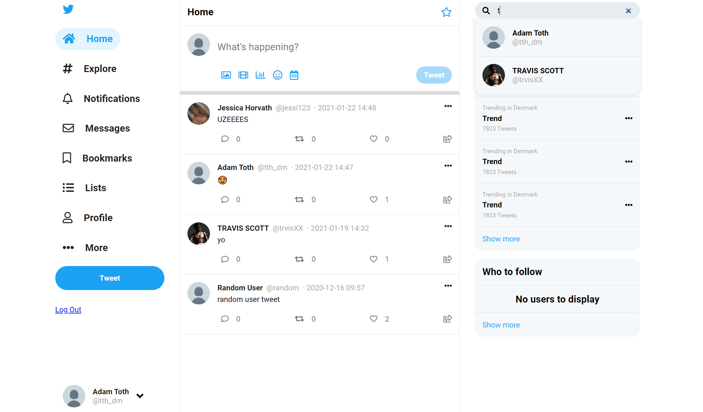
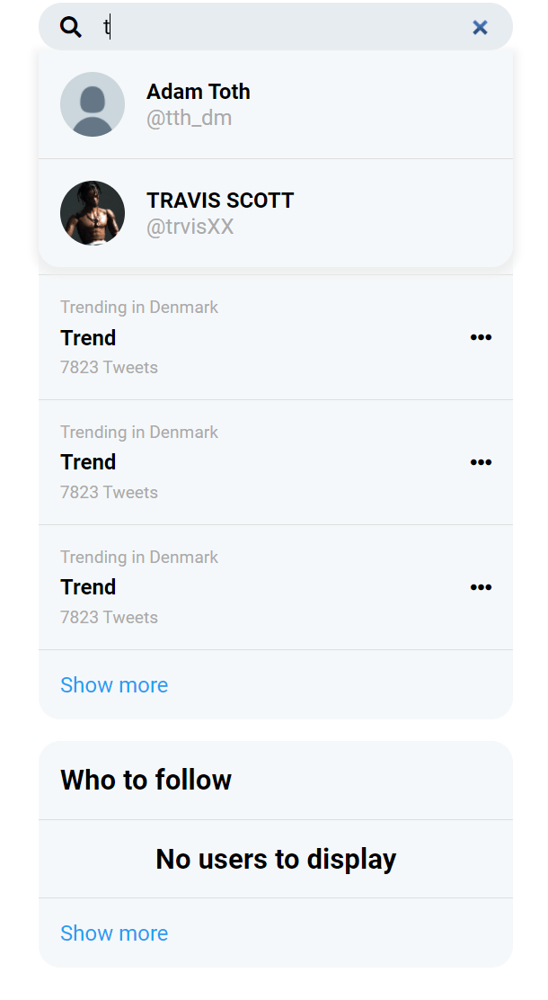
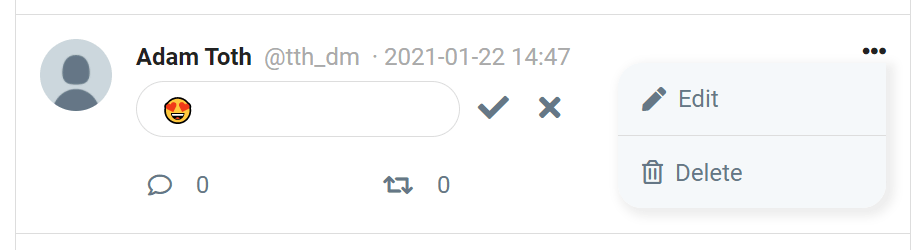

Twitter clone
Twitter clone is my latest exam project, which is inspired by the famous social media platform, Twitter. This full-stack application was all created by myself. I have used JavaScript, HTML and CSS for the front-end, PHP for the back-end and MySQL for the database.
Link to website Languages & technologies
Features
- Sign up
- Login/Logout
- Tweet
- Edit and delete own tweets
- Follow other users
- See people you follow
- See tweets of people you follow
- Chat with people you follow
- Search for other users
- Like tweets
Screenshots







